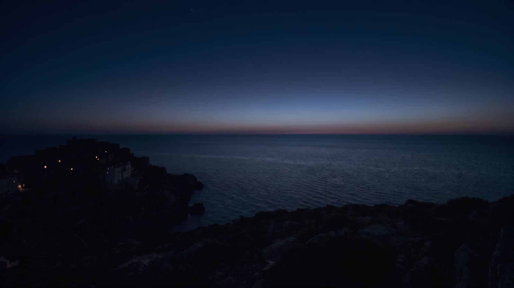
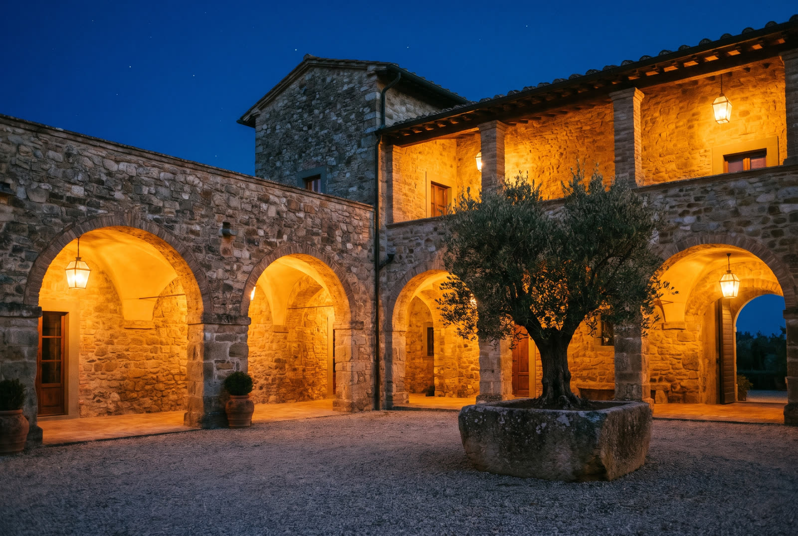
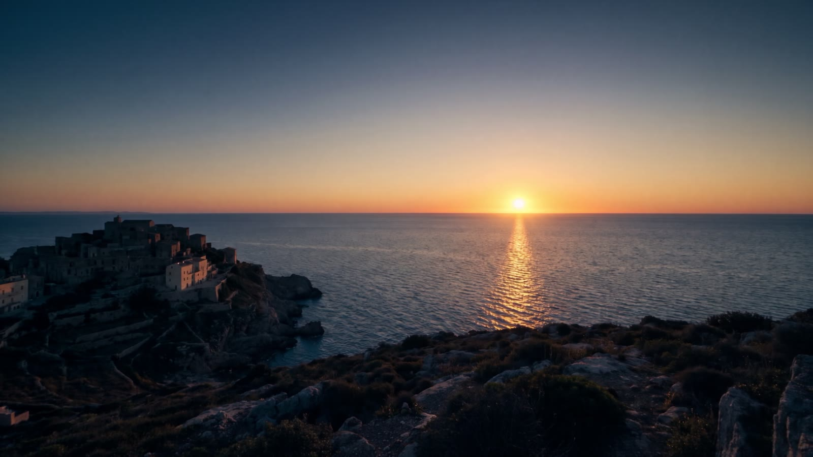
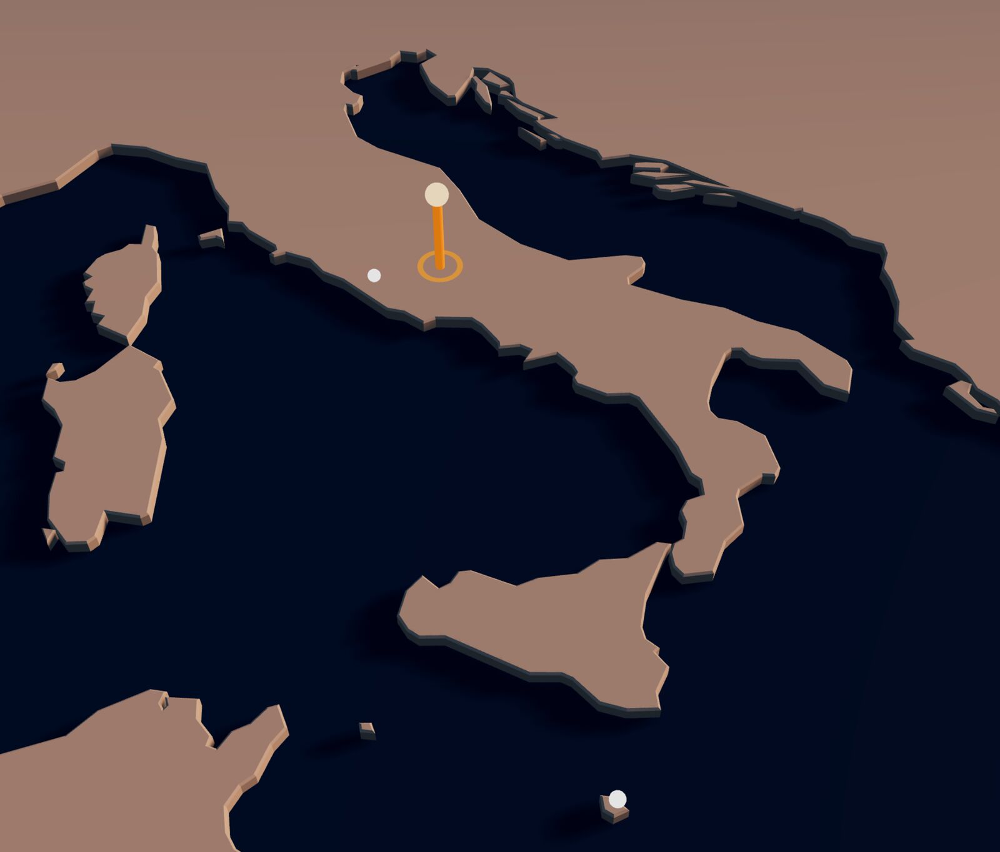
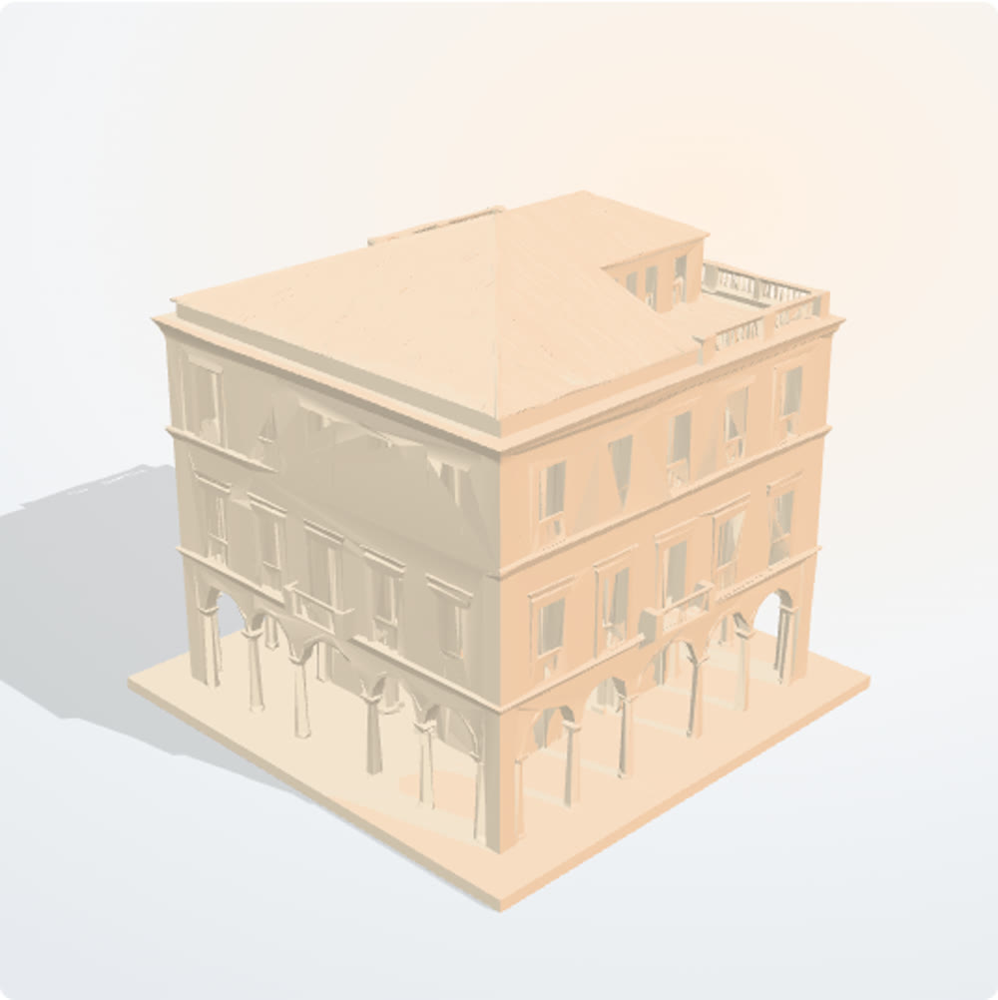

Spain
One opportunity: the planned conversion of an industrial building into a hotel in a Spanish city.

Seven funds managed by Framont & Partners Management Ltd invest in real estate, mainly in Italy, or in credit secured by Italian property. Three private opportunities in Italy, Spain and Greece are presented to professional investors on Framont Access.
Marketing communication. For professional and eligible investors only; the private opportunities are for professional investors only. Capital is at risk and the funds are illiquid. Read the fund documents before investing. The images, films and 3D models are illustrative and AI-generated; they do not show any fund's assets.
Each fund holds its property and credit in a segregated pool for its own investors. Framont manages the fund.
A closed-ended alternative investment fund with its own rules, assets and investors. Property is bought, and credit is held, for the account of the fund, never for Framont's own account.
Framont & Partners Management Ltd is licensed by the Malta Financial Services Authority under the Investment Services Act (Cap. 370) as an alternative investment fund manager (AIFM) and a UCITS management company. It manages each fund's portfolio and risk, and owes its duties to the fund's investors.
Each fund's depositary and its other service providers are named in its documents.
Where Framont or a vehicle it manages is involved on more than one side of a transaction, the conflict is identified, managed and disclosed to investors under Framont's conflicts of interest policy.
Five funds invest in real estate and two hold credit secured by property. The three private opportunities are held through special purpose vehicles (SPVs), a club deal or a certificate, and are summarised here.
Italian reserved alternative investment funds (AIFs), closed-ended, for professional investors and, where a fund's rules allow it, eligible investors. Their documentation is the Fund Rules (Regolamento di Gestione), available on request.
Real estate, property rights and property-holding companies, held over a horizon of up to 30 years.
Closed-ended reserved AIFItaly
Acquires, enhances and disposes of real estate. A dedicated Real Estate Management Committee informs significant investment and divestment decisions.
Closed-ended reserved AIFItaly
Real estate and shares of real estate companies, with a focus on Rome.
Closed-ended reserved AIFItalyProfessional investors, or other investors subscribing at least €500,000
Invests at least two-thirds in real estate and property rights, and funds the construction, completion and development of the assets it holds.
Closed-ended reserved AIFItalyMedium to long term
Mainly residential, office, commercial, industrial and tourism assets in Italy, the European Union and the G8. May use leverage.
Closed-ended reserved AIFItalyMedium to long term
These funds buy distressed credit positions, such as non-performing and unlikely-to-pay loans, secured on Italian real estate, and work them out. Returns depend on what is recovered and when.
Credit compartment that acquires and works out distressed credit positions largely secured by real estate collateral. Funded through investor commitments and capital calls.
Closed-ended reserved AIF, credit compartmentItaly
Fund investing in Italian non-performing loans (NPLs), unlikely-to-pay loans (UTPs) and other distressed positions secured by property. It seeks to recover value through restructuring, settlement, enforcement or sale of the collateral.
Closed-ended Notified AIFMaltaOffering Memorandum and Supplement on request

Individual transactions for professional investors only. Location, business plan and documentation are released after eligibility verification and, where required, a non-disclosure agreement.
Acquisition and luxury repositioning of a hospitality asset.
SPV, share dealIlliquid
Planned conversion of an industrial building in a Spanish city into a 71-key four-star hotel with a retail unit, with an international operator. Planning status and operator agreement to confirm
SPV with senior debtIlliquid
Off-market villas, hotels, development land, coastal assets and a private island.
SPV, club deal or actively managed certificateNon-disclosure or non-circumvention agreement first

Fund documents, ISINs and deal materials are released on Framont Access to verified investors.
West to east, towards the sunrise.
One opportunity: the planned conversion of an industrial building into a hotel in a Spanish city.
Five Italian real estate funds, one focused on Rome, two funds holding credit secured on Italian property, and one hospitality opportunity. The manager is based in Malta.
An off-market portfolio across the islands, the coast and Athens. Details are shared only under a non-disclosure agreement.
Markers show countries, plus Rome, Wright's stated focus, and Malta, where the manager is based. Exact locations are shared only after verification. Coastlines: Natural Earth.

The credit funds value the property behind each position from prices achieved in comparable local sales, not from the appraisal. A discount for how long similar properties take to sell gives a forced-sale value; deducting the time and cost of recovery gives a net recovery value. Positions are priced on the value to confirm.
To confirm before publication. This method comes from the earlier draft. The investment team needs to confirm that it describes how Hubble Capital and CIREDCO Fund 1 actually value collateral, and which of the three values a position is priced on.

Illustrative 3D model, AI-generated. Scroll to move the sun; drag to turn.Bar lengths show the order of the three values, not real proportions.
Real estate and distressed credit can lose value, and money committed to these funds cannot be taken out on demand. Read the risk sections of each fund's documents in full.
You can lose part or all of the money you invest. None of these funds or vehicles protects or guarantees capital.
The funds are closed-ended. Units cannot normally be redeemed before the fund ends, which for one fund can be up to 30 years, and there may be no buyer for them.
An individual opportunity depends on one property or a small portfolio, and on one business plan. A fund may hold few assets, in few places.
Construction can cost more and take longer than planned, permits can be delayed, and completed units or rooms may not sell or let as expected.
Distressed credits may recover less than their purchase price, or later than expected. Enforcement through the courts can take years.
Property values are estimates until an asset is sold. The price achieved in a sale can be well below the last valuation.
Where a fund or vehicle borrows (Pinnacle Investment may use leverage; the Spanish hotel SPV has senior debt), the lender is repaid before investors, so investors absorb losses first and those losses are larger.
Rules on property, enforcement and tax differ between Italy, Spain and Greece and can change, affecting value and timing.
Where an opportunity is offered through an actively managed certificate, you also carry the credit risk of the certificate's issuer.
CIREDCO Fund 1 is a Malta Notified AIF. It is not licensed by the MFSA: it is included in the MFSA's List of Notified AIFs, and Framont, as its AIFM, is responsible for it. It is available only to professional and qualifying investors.
This page shows no return figures. Where a target return is stated, it is an objective, not a forecast or a promise, and it is not a reliable indicator of future results. Target returns are stated before fees, costs and taxes, which reduce what investors receive scope to confirm for each fund's documents.
This is a marketing communication. It is not an offer, a solicitation, or investment, legal or tax advice. Decisions to invest must be based on each fund's offering documents.
The Fund Rules for the Italian funds; the Offering Memorandum and Offering Supplement for CIREDCO Fund 1; the deal documentation for each opportunity; and a key information document where one is required. They are available on request from Framont & Partners Management Ltd, in languages to confirm.
A summary of investor rights is available at link to confirm.
The funds are reserved for professional investors and, where a fund's rules allow it, other eligible investors. Whether a non-professional investor can subscribe also depends on the rules of their country of residence. They are not offered to other retail investors. The private opportunities are reserved for professional investors. This page is not directed at US Persons or at anyone in a country where its distribution would be unlawful. Each fund is marketed only in the countries where it has been notified.
Framont & Partners Management Ltd may decide to end the arrangements for marketing a fund in a country (de-notification).
Framont & Partners Management Ltd is licensed by the Malta Financial Services Authority under the Investment Services Act (Cap. 370) as an alternative investment fund manager and a UCITS management company. The licence can be checked on the MFSA Financial Services Register. The MFSA's licensing of the manager does not mean that it has approved these funds or this communication.
Complaints procedure: link to confirm. Eligible complainants can refer an unresolved complaint to the Office of the Arbiter for Financial Services in Malta. Position under the Investor Compensation Scheme: to confirm.
Response to Francesca Caruso's review of 21 October 2026. This section and the highlighted items are removed before publication. Regulatory references still need confirming with the legal adviser.
| # | Point raised | What changed |
|---|---|---|
| 1 | Framont shown as the lender | Lending language removed. Property and credit are described as held for the account of each fund, in a segregated pool; Framont is named only as the manager (section "The structure"). |
| 2 | Loan servicing for third parties | Service removed. |
| 3 | Capital Solutions and advisory for developers | Service removed. No structuring or advisory offer to borrowers remains. |
| 4 | Separate account | Removed. |
| 5 | "Since 2026" claim on Italian lending | Removed. The page makes no claim about the origination regime. |
| 6 | "MFSA licensed, EU passport" badge; Dominican Republic | Badge removed. The page states that each fund is marketed only where it has been notified; the per-fund country list is still open (see below). The Dominican Republic is removed: no current real estate fund or opportunity invests there. |
| 7 | Marketing communication or pre-marketing | The page describes only existing funds and opportunities already listed on Framont Access, and is labelled a marketing communication in the opening and in Important information. The opening headline makes no regulatory claim. |
| 8 | Audience | "Private investors" and the €50,000 minimum removed. An entry gate asks for country and investor category, and turns away US Persons and investors who are neither professional nor eligible under a fund's rules and their national law. The private opportunities are stated as professional only. |
| 9 | Target returns and bracketed figures | All target returns, minimum tickets and "double-digit yields" removed. The one remaining amount is Wright's €500,000 eligibility threshold, as listed on Access. |
| 10 | No risks shown | A full risks section set at the same type sizes as the fund list, plus an About returns note. |
| 11 | Operational promises | Co-investment, drawdown, custody and ten-day decision claims removed. The collateral method is marked for confirmation. |
| 12 | Conflicts of interest | "Clients, not counterparties" removed. Roles and the conflicts policy are stated; the policy link is pending. |
| 13 | Company details and trading name | Full name with Ltd, address and VAT added; licence wording made identical everywhere (AIFM and UCITS management company, under the Investment Services Act, Cap. 370). "Framont Real Estate" is no longer used as a company name: the page sits under Framont Access as its real estate section. |